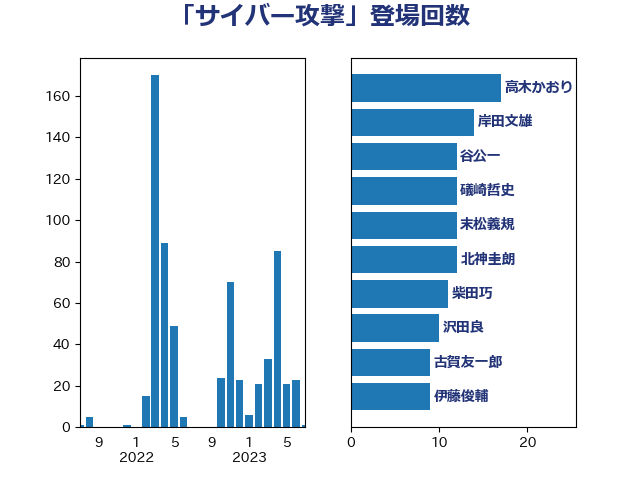

単語「サイバー攻撃」

| 高木かおり | 日本維新の会 | 17 回 |
| 岸田文雄 | 自由民主党 | 14 回 |
| 谷公一 | 自由民主党 | 12 回 |
| 礒崎哲史 | 国民民主党 | 12 回 |
| 末松義規 | 立憲民主党 | 12 回 |
| 北神圭朗 | 無所属 | 12 回 |
| 柴田巧 | 日本維新の会 | 11 回 |
| 沢田良 | 日本維新の会 | 10 回 |
| 古賀友一郎 | 自由民主党 | 9 回 |
| 伊藤俊輔 | 立憲民主党 | 9 回 |
| 鬼木誠 | 立憲民主党 | 8 回 |
| 足立康史 | 日本維新の会 | 8 回 |
| 三木圭恵 | 日本維新の会 | 8 回 |
| 阿部司 | 日本維新の会 | 7 回 |
| 磯崎仁彦 | 自由民主党 | 7 回 |
| 湯原俊二 | 立憲民主党 | 7 回 |
| 松本剛明 | 自由民主党 | 7 回 |
| 吉田宣弘 | 公明党 | 7 回 |
| 鈴木庸介 | 立憲民主党 | 6 回 |
| 芳賀道也 | 国民民主党 | 6 回 |
| 松野博一 | 自由民主党 | 6 回 |
| 東徹 | 日本維新の会 | 6 回 |
| 加藤勝信 | 自由民主党 | 6 回 |
| 青柳仁士 | 日本維新の会 | 5 回 |
| 阿部弘樹 | 日本維新の会 | 5 回 |
| 遠藤良太 | 日本維新の会 | 5 回 |
| 輿水恵一 | 公明党 | 5 回 |
| 笠井亮 | 日本共産党 | 5 回 |
| 福重隆浩 | 公明党 | 5 回 |
| 牧島かれん | 自由民主党 | 5 回 |
| 清水真人 | 自由民主党 | 5 回 |
| 平将明 | 自由民主党 | 5 回 |
| 岬麻紀 | 日本維新の会 | 5 回 |
| 大石あきこ | れいわ新選組 | 5 回 |
| 國重徹 | 公明党 | 5 回 |
| 倉林明子 | 日本共産党 | 5 回 |
| 赤池誠章 | 自由民主党 | 4 回 |
| 藤巻健太 | 日本維新の会 | 4 回 |
| 萩生田光一 | 自由民主党 | 4 回 |
| 美延映夫 | 日本維新の会 | 4 回 |
| 浜田靖一 | 自由民主党 | 4 回 |
| 浅野哲 | 国民民主党 | 4 回 |
| 池下卓 | 日本維新の会 | 4 回 |
| 榛葉賀津也 | 国民民主党 | 4 回 |
| 山谷えり子 | 自由民主党 | 4 回 |
| 小林鷹之 | 自由民主党 | 4 回 |
| 和田有一朗 | 日本維新の会 | 4 回 |
| 吉田とも代 | 日本維新の会 | 4 回 |
| 高市早苗 | 自由民主党 | 3 回 |
| 西岡秀子 | 国民民主党 | 3 回 |
| 緑川貴士 | 立憲民主党 | 3 回 |
| 竹詰仁 | 国民民主党 | 3 回 |
| 竹内真二 | 公明党 | 3 回 |
| 穀田恵二 | 日本共産党 | 3 回 |
| 田村智子 | 日本共産党 | 3 回 |
| 玉木雄一郎 | 国民民主党 | 3 回 |
| 梅村聡 | 日本維新の会 | 3 回 |
| 林芳正 | 自由民主党 | 3 回 |
| 平林晃 | 公明党 | 3 回 |
| 工藤彰三 | 自由民主党 | 3 回 |
| 堀場幸子 | 日本維新の会 | 3 回 |
| 鎌田さゆり | 立憲民主党 | 2 回 |
| 鈴木義弘 | 国民民主党 | 2 回 |
| 西村康稔 | 自由民主党 | 2 回 |
| 玄葉光一郎 | 立憲民主党 | 2 回 |
| 浜地雅一 | 公明党 | 2 回 |
| 浅田均 | 日本維新の会 | 2 回 |
| 浅川義治 | 日本維新の会 | 2 回 |
| 杉田水脈 | 自由民主党 | 2 回 |
| 杉本和巳 | 日本維新の会 | 2 回 |
| 有村治子 | 自由民主党 | 2 回 |
| 後藤茂之 | 自由民主党 | 2 回 |
| 山添拓 | 日本共産党 | 2 回 |
| 山本順三 | 自由民主党 | 2 回 |
| 山本太郎 | れいわ新選組 | 2 回 |
| 小野泰輔 | 日本維新の会 | 2 回 |
| 寺田稔 | 自由民主党 | 2 回 |
| 奥野総一郎 | 立憲民主党 | 2 回 |
| 加田裕之 | 自由民主党 | 2 回 |
| 中谷一馬 | 立憲民主党 | 2 回 |
| 中西祐介 | 自由民主党 | 2 回 |
| 中川貴元 | 自由民主党 | 2 回 |
| 中川宏昌 | 公明党 | 2 回 |
| 下条みつ | 立憲民主党 | 2 回 |
| 上田清司 | 国民民主党 | 2 回 |
| 三浦靖 | 自由民主党 | 2 回 |
| 音喜多駿 | 日本維新の会 | 1 回 |
| 長島昭久 | 自由民主党 | 1 回 |
| 長妻昭 | 立憲民主党 | 1 回 |
| 赤澤亮正 | 自由民主党 | 1 回 |
| 赤嶺政賢 | 日本共産党 | 1 回 |
| 谷川とむ | 自由民主党 | 1 回 |
| 細田健一 | 自由民主党 | 1 回 |
| 米山隆一 | 立憲民主党 | 1 回 |
| 篠原豪 | 立憲民主党 | 1 回 |
| 神津たけし | 立憲民主党 | 1 回 |
| 石川大我 | 立憲民主党 | 1 回 |
| 石井正弘 | 自由民主党 | 1 回 |
| 田畑裕明 | 自由民主党 | 1 回 |
| 田島麻衣子 | 立憲民主党 | 1 回 |
| 牧山ひろえ | 立憲民主党 | 1 回 |
| 片山大介 | 日本維新の会 | 1 回 |
| 瀬戸隆一 | 自由民主党 | 1 回 |
| 河野義博 | 公明党 | 1 回 |
| 河野太郎 | 自由民主党 | 1 回 |
| 森山浩行 | 立憲民主党 | 1 回 |
| 森屋隆 | 立憲民主党 | 1 回 |
| 梅谷守 | 立憲民主党 | 1 回 |
| 柘植芳文 | 自由民主党 | 1 回 |
| 松山政司 | 自由民主党 | 1 回 |
| 松原仁 | 立憲民主党 | 1 回 |
| 杉尾秀哉 | 立憲民主党 | 1 回 |
| 本田顕子 | 自由民主党 | 1 回 |
| 星北斗 | 自由民主党 | 1 回 |
| 早稲田ゆき | 立憲民主党 | 1 回 |
| 掘井健智 | 日本維新の会 | 1 回 |
| 川田龍平 | 立憲民主党 | 1 回 |
| 岸真紀子 | 立憲民主党 | 1 回 |
| 岩本剛人 | 自由民主党 | 1 回 |
| 岡本あき子 | 立憲民主党 | 1 回 |
| 山田太郎 | 自由民主党 | 1 回 |
| 山田勝彦 | 立憲民主党 | 1 回 |
| 尾身朝子 | 自由民主党 | 1 回 |
| 小野田紀美 | 自由民主党 | 1 回 |
| 奥下剛光 | 日本維新の会 | 1 回 |
| 堀井巌 | 自由民主党 | 1 回 |
| 和田義明 | 自由民主党 | 1 回 |
| 吉川ゆうみ | 自由民主党 | 1 回 |
| 八木哲也 | 自由民主党 | 1 回 |
| 佐藤英道 | 公明党 | 1 回 |
| 伊波洋一 | 無所属 | 1 回 |
| 仁木博文 | 無所属 | 1 回 |
| 串田誠一 | 日本維新の会 | 1 回 |
| 中野洋昌 | 公明党 | 1 回 |
| 三宅伸吾 | 自由民主党 | 1 回 |